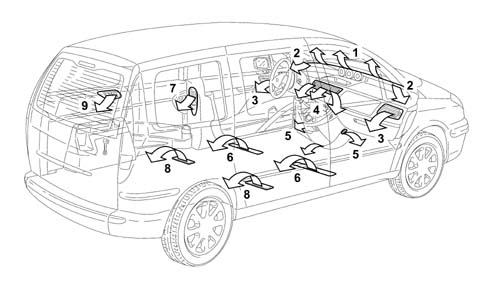
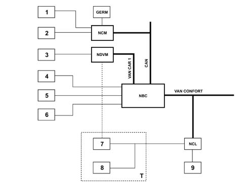
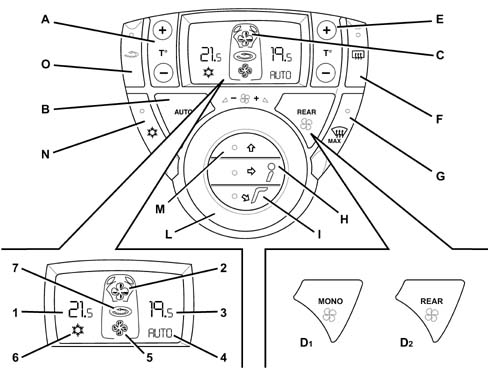
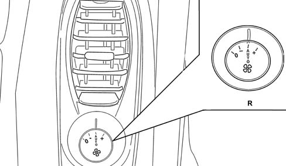
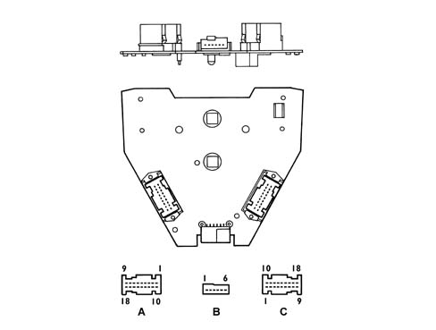

CLIMATE CONTROL SYSTEM
- Path
- Descriptions > 50 AUXILIARY UNITS > 5040 AIR CONDITIONING CASING AND COMPONENTS > CLIMATE CONTROL SYSTEM
- Kind
- system description
- Applies to
- all engines; all production periods
- Interactive page
- https://sloeber94.github.io/elrnDB-fUlss/en/#/179006645
Applies to: all engines; all production periods
General remarks
The climate control system fitted to the vehicle is used to alter the environmental properties of air taken into the car (temperature and moisture), demist the glass surfaces and insulate the vehicle occupants from pollutants.
The passenger compartment climate control system therefore contributes greatly to the physical wellbeing of the passengers and their comfort.
The following image shows system air distribution through the passenger compartment

- 1 - Fixed upper diffuser for windscreen defrosting and demisting
- 2 - Fixed diffuser for demisting or defrosting side windows
- 3 - Orientable and adjustable side windows
- 4 - Orientable and adjustable central diffusers
- 5 - Fixed front footwell diffusers
- 6 - Fixed rear footwell diffusers located behind the third row
- 7 - Rear orientable and adjustable outlets in the second row
- 8 - Fixed rear footwell diffusers located in the third row
- 9 - Orientable outlets in the third row.
Specifications
The vehicle is equipped with the 2 specifications described below.
Automatic Dual Zone air conditioner
Passenger compartment temperature regulation is split left/right to the first and second rows (the left and right temperature conditions in the second row are the same as in the first row)
Triple zone automatic air conditioner
This is a combination of a dual zone system for the first and second row with additional fans (left and right side) that can be managed directly in the second row to alter the flow to the side outlets in the second and third row.
For all versions: cooling is not managed directly by the NCM (engine control node), which manages the control of certain functions such as GERM (engine cooling fan unit) and compressor activation. The controls for these functions are, however, issued directly by the NBC.
Automatic dual zone - triple zone climate control system
General remarks
Operation of the dual zone module is based on four main fundamental parameters for each climate control system:
- flow,
- distribution,
- mixing,
- air quality.
For more accurate control of climate control operating pameters, the system is equipped with internal and external temperature sensors plus a radiation sensor that sends a solar radiation reading to the NCL to achieve optimum control of dual climate control system temperature. The radiation sensor is located on the facia centre line, while the external temperature sensor is located on the passenger side door mirror.
Specifications
The automatic climate control system manages the temperature (2 zones), the distribution (2 zones) of the air and the air flow rate inside the passenger compartment on both the driver and passenger sides (front or front and rear) to achieve the desired comfort level.
The system is operated by the front passengers by operating a switch on the control panel on the centre console.
Another option is another climate control system version known as a triple zone system. In this case, the dual zone system is complemented by additional fans (on the left and right central pillar on the second row). These allow rear passengers to alter the flow by means of controsl on the side outlets.
The user is provided with a panel made up of keys, warning lights and an LCD display that are used to set ideal heating conditions and visibility inside the passenger compartment. A button marked REAR on the automatic climate control system can also be used to authorise/prohibit second row passengers from adjusting air flow by means of knobs on the additional fans.
Automatic system operating strategy
The following figure shows the triple zone climate control system operating architecture

- 1 - Engine fluid temperature
- 2 - Linear sensor
- 3 - Distriubutor unit fan
- 4 - Climate control circuit compressor
- 5 - Heated rear window
- 6 - Radiation sensor
- 7 - Left rear supplementary fan
- 8 - Right rear supplementary fan
- 9 - Passenger compartment temperature sensor
CONTROL PANEL
The figure shows both types of NCL (dual zone and triple zone) with controls

- A - Driver side interior temperature regulation button
- B - AUTO operating button
- C - Display
- D1 - MONO button joins driver and passenger side temperatures
- D2 - REAR button enables or disables use of additional rear outlets
- E - Passenger side interior temperature regulation button
- F - Heated rear window on/off button
- G - On/off button for maximum defrost/demist of windscreen and front side windows, heated rear window and door mirror heater coils.
- H - Central vent air outlet regulation button
- I - Lower vent air outlet regulation button
- L - Rotary wheel for air flow regulation (main fan)
- M - Central vent air outlet regulation button
- N - A/C button enabling air condition compresosr on/off
- O - On/off button for internal air recirculation/additional rear outlets
- 1 - Driver side temperature display
- 2 - Fan flow symbol
- 3 - Passenger side temperature display
- 4 - AUTO symbol
- 5 - Rear fan symbol
- 6 - Compressor symbol
- 7 - Recirculation symbol
If the climate control system is triple zone, the rear outlet controls shown in the figure are included

- R - Rear air flow regulation knob
SETTINGS AND SELECTIONS
The system offers various modes:
- turning main fan knob (L) clockwise;
- pressing button A (+/-) or E (+/-);
- pressing one of the buttons (H ,I ,M);
- if the engine is off for more than 20 minutes, the system always restarts in automatic mode even if it was off before the vehicle was turned off, without altering the temperature level.
In the following three cases, the system sets all the operating conditions stored automatically before being turned off:
- pressing one of the buttons B, N, N; in this case the system switches to automatic mode;
- pressing button G; in this case the system switches to MAX-DEF mode.
The system also stores the situation before deactivation automatically but also takes into account vehicle parking duration and other external parameters, namely:
- if the engine is parked for up to 20 minutes with virtually unchanged internal temperature, the system restarts with the same settings. If the temperature changes greatly during this period, the system changes to automatic mode and sets itself to the temperature level applied before the vehicle was turned off;
- if the engine is off for more than 20 minutes, the system always restarts in automatic mode even if it was off before the vehicle was turned off, without altering the temperature level.
Setting required temperature level
This operation is carried out by pressing button A (+/-) or E (+/-) and checking the required temperature appears on the display (C). If a dual zone temperature system is fitted, the driver and the front passenger can set different temperature levels. The maximum difference permitted by the system is 5 °C.
The temperature increases or decreases in 1 °C steps between 14 °C and 18 °C and between 24 °C and 28 °C, while the reading shown constantly on the display changes in 0.5 °C steps between 18 °C and 24 °C.
If the system is triple zone and comes with addition fans, the system regulates the temperature in the same way as a single zone system when the + or - key is held down for a long time (for longer than one second)
Air distribution selection
The operation is carried out by pressing a combination of buttons H, I, M located inside knob L. Five different distribution patterns are possible: ventilation (front), front bilevel/footwell), footwell, windscreen/footwells, windscreen (MAX-DEF).
Select the required distribution pattern by pressing the corresponding key and deactivating any other distribution patterns that may be activated. The relevant leds come on and others go off to confirm that selection has taken place. During automatic operation (AUTO), air distribution is managed by the system and the relevant leds are thus all off.
Setting fan speed
When knob L is turned, the display shows the required speed value by darkening the front fan symbol blades on display C.
Compressor activation/deactivation
When the A/C key (N in the figure) is pressed with the led on, the compressor is disabled and the led goes off. When the key is pressed with the led off, the automatic system manages the compressor (enabled/disabled). If the system is in automatic mode, the compressor is controlled and managed by the system according to outside temperature. When the compressor is deactivated with the associated led off, recirculation status remains as it was prior to deactivation (closed or open) and it is still possible to activate open recirculation.
If the system is in automatic mode, the compressor is controlled on the basis of outdoor temperature in accordance with the compressor deactivation strategy if measued outdoor temperature is < di 4° C.
Alignment between driver and passenger side temperatures
Setting is carried out by pressing the MONO key which unites driver and passenger temperatures to obtain an even temperature in the passenger compartment.
Recirculation activation
This setting allows the driver to choose, by pressing button O, to drive with bypass recirculation closed (relevant led on), with air taken in from outside (led off), bypass recirculation on, or system left in automatic mode (led off even if active)
Setting automatic operation (AUTO)
This is carried out by pressing the auto button on the climate control panel, when the display shows AUTO and the symbol (ice).
This key sets the system to fully automatic mode, when it manages and controls temperature, air distribution and main fan speed itself;
During automatic operation, if button N is pressed, the compressor is deactivated and the cold air flow is turned off, the associated led goes off, the system stays in automatic mode and the symbol (ice) disappears from the display but the AUTO message remains.
If one or more functions are selected automatically (distribution, ventilation), the AUTO message disappears from the display in accordance with the following activation strategy
Control | AUTO (appears on display) |
|---|---|
Recirculation | YES |
Compressor | NO |
Timing | YES |
Fan knob | NO |
Mixing | NO |
MAX DEF | YES |
Heated rear window | NO |
REAR | YES |
AUTO | YES |
Additional fan activation | YES |
Air distribution selection
By pressing a combination of buttons H, I, M, located in central knob L. Five distribution patterns are possible: ventilation (front), front bilevel/footwell), footwell, windscreen/footwells, windscreen (MAX-DEF).
Select the required distribution pattern by pressing the corresponding key and deactivating any other distribution patterns that may be activated.
The relevant leds come on and others go off to confirm that selection has taken place. During automatic operation (AUTO), air distribution is managed by the system and the relevant leds are thus all off.
Three temperature bands have been defined and the automatic device associates a distribution pattern to each as shown below:
- T outdoor £ 15° C: windscreen or footwell distribution based on other parameters such as solar radiation etc.
- 15° £ T outdoor £ 25° C: windscreen/footwell or footwell distribution based on other parameters such as solar radiation etc.
- T outdoor ³ 25° C: ventilation distribution
To optimise automatic distribution changs according to solar radiation and vehicle speed distribution.
Heated rear window activation
The control button activates electrical coils in the rear window to heat, dehumidify and demist.
To turn this function off, simply press the button again and ensure the relevant led has gone off.
The heated rear window will work if the ignition key is on MAR. It is managed independently even if the system is not activated.
Maximum cooling setting
Carried out automatically by pressing or holding down the temperature selection key unti the temperature is set to 14 °C, with exterior conditions that require the system to perform to the maximum.
This setting forces the system to work in single zone mode and activates the following actions:
- Mixer in max cooling position;
- air distribution set to ventilation;
- Air flow rate at maximum value;
- engagement of compressor;
- automatic recirculation closed (for petrol versions), partially open (for JTD versions), even though open recirculation can be operated manually without abandoning the required setting.
Maximum heating setting
If a temperature of 28°C is set automatically, the system is bound to perform to the maximum. This setting activates:
- Mixer in maximum heating position
- air distribution to windscreen/footwells or footwells according to the outdoor temperature;
- Air flow rate at maximum value;
- compressor managed in accordance with system software;
- automatic recirculation closed (for petrol versions), partially open (for JTD versions), even though open recirculation can be operated manually without abandoning the required setting.
MAX-DEF activation
This operation is activated automatically by pressing button G to ensure window demisting in the least possible time. MAX DEF procedure management takes precedence over "maximum cooling" or "maximum heating" modes and these are suspended when it is activated.
The system performs the following actions when the function is activated:
- stores operating status and displays before the command was given
- AUTO disappears from the display
- activation of MAX DEF leds, compressor, heated rear window and MONO mode temperature (shown on display).
- air flow shown on display
Function activation also determines activation of:
- maximum air flow
- distribution to the windscreen
- mixer flaps in maximum heating position
- bypass recirculation open (100% outside air)
- compressor
- heated rear windscreen
The only actions permitted during this mode are air flow adjustment and heated rear window deactivation. The system abandons the function if MAX DEF or any other button is pressed a second time.
Air flow adjustment
Air flow is regulated manually byturning the knob to gradually darken the vanes on the fan symbol shown on the display. The maximum number of 8 steps correspond to possible fan speed settings.
If no manual controls are given, speed is managed continuously by the automatic device and shown on the display by constant darkening of 4 half-vanes.
The AUTO message on the display goes off if the ventilation control is operated manually. In this case, air flow to the second and third rows may be adjusted (by using the additional fans) if the REAR button is activated.
When the compressor is deactivated, the ventilation control may be adjusted until flow is zero. If the compressor is enabled, the system can go no lower than the half-vane shown on the display (equivalent to 20% flow rate) to prevent the compressor icing up.
Activating rear outlet air flow regulation (REAR)
The interior air recirculation function (for versions with additional fans) allows the heating or cooling conditions required in the second and third row to be reached more quickly.
This setting is achieved by pressing button D (REAR). This authorises passengers in the second row to manage air flow regulation by means of the additional fan knobs. Display C then shows the rear fan symbol. The effect of the additional fans depends on knob positions:
- knob in position "0": additional fan off;
- knob in position "-": addition fan air output equal to 0% of main fan flow setting;
- knob in position "AUTO" position: additional fan with same output as main fan;
- knob in position "+": additional fan with air output equal to 70% of current main fan output.
If the REAR button is not not and the climate control system is operating automatically, the air flow to the second and third rows is as supplied by the man fan. In this case, the only way to prevent ventilation is to close the relevant outlets.
During automatic and manual operation, if the knob is set to "+", the additional fans work in all air distribution modes apart from "MAX DEF"
System deactivation
The system is deactivated by turning fan outlet regulation knob anticlockwise until the display shows the vehicle profile without the fans.
The system performs the following actions when it is turned off:
- stores status prior to deactivation;
- turns off graphics on display apart from vehicle profile;
- sets air recirculation to bypass on (external air intake);
- turns off compressor;
- turns off fan;
- sets air distribution to windscreen mode;
- mixer in max cooling position.
FAULT SITUATION
When faults are detected (buttons locked, mixer motors, distribution, recirculation, passenger comartment temperature sensor, solar radiation sensor, coolant fluid temperature, vehicle speed - and defects connected with electrical equipment, Van network etc.) the system automatically switches to Recovery mode. The points that separate the decimal numbers on the display begin to flash in this mode.
Contact the Fiat Service Network as soon as possible in this case.
Operation in Recovery mode
If two or more keys are locked, the system switches to Recovery mode.
In brief, system operation in this mode is as follows:
- driver and passenger temperature: these are co-ordinated and change in the same way; if buttons A or E are locked, the system sets the temperature to 21°C;
- main fan, distribution, compressor, recirculation operation is assured in automatic mode (AUTO);
- AUTO function: because the function is predefined, recirculation, compressor, air distribution and main fan are managed automatically and pressing the buttons therefore has no effect;
- MAX-DEF function: The system sets itself to automatic mode, pressing the air distribution, compressor, AUTO and recirculation buttons has no effect while main fan and temperature functions remain active.
- REAR function: additional fans cannot be activated;
- Heated rear window: cannot be activated: timing ends first if active before.
Automatic climate control system Node PIN OUT
The following illustration shows the location of the three triple zone climate control system nodes

- A - Black 18-way connector
- B - Natural 6-way connector
- C - White 18-way connector
The following diagram shows the Pin Out for the three connectors
Black 18-way connector
Pin | Function |
|---|---|
1 | Not connected |
2 | Not connected |
3 | Not connected |
4 | Right rear fan control |
5 | Left rear fan control |
6 | Right rear fan switch |
7 | 5V rear fan switch |
8 | Date |
9 | Not connected |
10 | Not connected |
11 | Not connected |
12 | Not connected |
13 | Left rear fan switch |
14 | Date B |
15 | + VAN |
16 | Earth |
17 | Not connected |
18 | Not connected |
6 way connector
Pin | Function |
|---|---|
1 | Not connected |
2 | Not connected |
3 | Stage 1 |
4 | Stage 2 |
5 | Stage 3 |
6 | Stage 4 |
White 18-way connector
Pin | Function |
|---|---|
1 | Not connected |
2 | Fan control |
3 | Fan diagram |
4 | Not connected |
5 | Not connected |
6 | + Left mixing |
7 | + Right mixing |
8 | + Distribution |
9 | Not connected |
10 | + E/A |
11 | Not connected |
12 | Solar sensor earth |
13 | Not connected |
14 | Left outlet air sensor |
15 | Right outlet air sensor |
16 | + Sensor |
17 | - Sensor |
18 | Turbine diag. |
Rear control Pin Out
The table shows the Pin Out for left and right ventilation controls
Black 6-way connector
Pin | Function |
|---|---|
1 | + Standby |
2 | Not connected |
3 | Not connected |
4 | Earth |
5 | Fan switch power supply |
6 | Fan switch info |
Compressor
The vehicle comes with a single SANDEN SD7V16 compressor for each cooling system
The compressor is the alternating piston, variable capacity type. The capacity of this type of compressor can vary as a result of: variations in the load required from the system, changes in the outside temperature and/of humidity conditions, sharp alterations in the engine load conditions.
Coolant pressure safety is guaranteed by a cooling pressure sensor that communicates the circuit pressure condition to the NCM.
The NCM supplies information on systm status to the NBC (Body Compupter node) that controls NCL cooling requirements and controls compressor activation/deactivation
The main features of the compressor are:
- Cooling capacity: 760 g
- Direction of rotation: clockwise.
- Max continuous number of revs: 7000 rpm.
- Max non-continuous number of revs: 8000 rpm.
- Number of pistons: 7.
- Minimum stroke: 2.2 mm.
- Maximum stroke: 34.2 mm.
- Minimum displacement: 10.4 cm³/rev
- Maximum displacement: 161.3 cm³/rev
- Quantity of lubricant: 135 cm³ ± 15 cm³.
Engine cooling fan assembly operating strategies (GERM)
Engine cooling fan control strategies are of two types referred to as FRIC and BRIC
FRIC (cooling function integral with engine control).
This strategy guarantees control of the engine cooling fan during and after engine operation.
The system considers:
- coolant temperature
- climate control system function cooling requirements.
- automatic transmission water/fluid heat exchanger cooling requirements.
- temperature level to which the thermostat is set.
The strategy must also guarantee information to the multiplex line or in sequence to other relevant engine control functions:
- water temperature information for various systems
- water temperature warning and prewarning for control panel warning light
- request to deactivate the climate control system compressor
- GMV rotation information
- supply the necessary power to GMV electronic circuits at each stage of operation
- guarantee emergency operating mode if a system component is faulty.
BRAC (air conditioning cooling requirement)
This process determines an air conditioning cooling requirement. This requirement is processed using the various possible information sources:
- Conventional mechanical pressure switch.
- Coolant pressure sensor signal, acquired via the NCM.